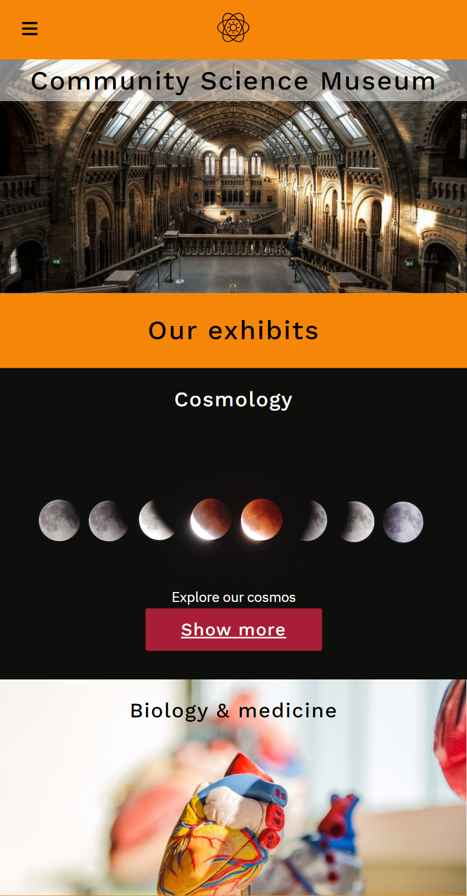
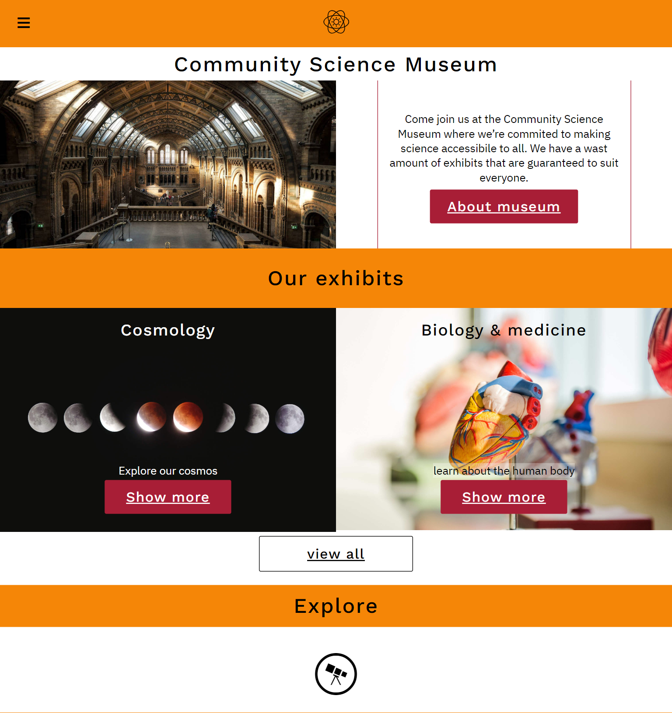
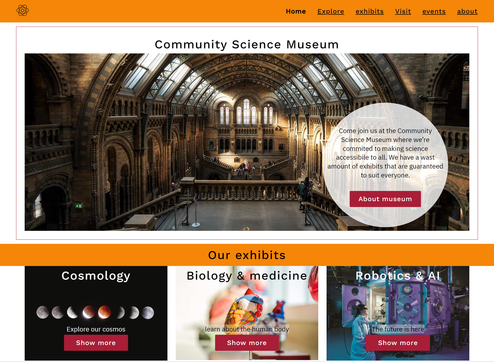

How it looks
Here is some screenshots you can look at of how the page looks on diffrent screen sizes, as well as get a feeling of how it is.
Mobile devices
On Mobile Devices, i took full advantage of the width of diffrent sizes, so it is more easy to look at images.
tablet and medium sized devices
On tablet devices, the height and width are being used to show a bit more content at once. While keeping key features the same, for example buttons, so there is no new learning curve for diffrent sizes.
Laptop and desktop
With more space, things like navigation bar is shown at all times and there is room for more content.
